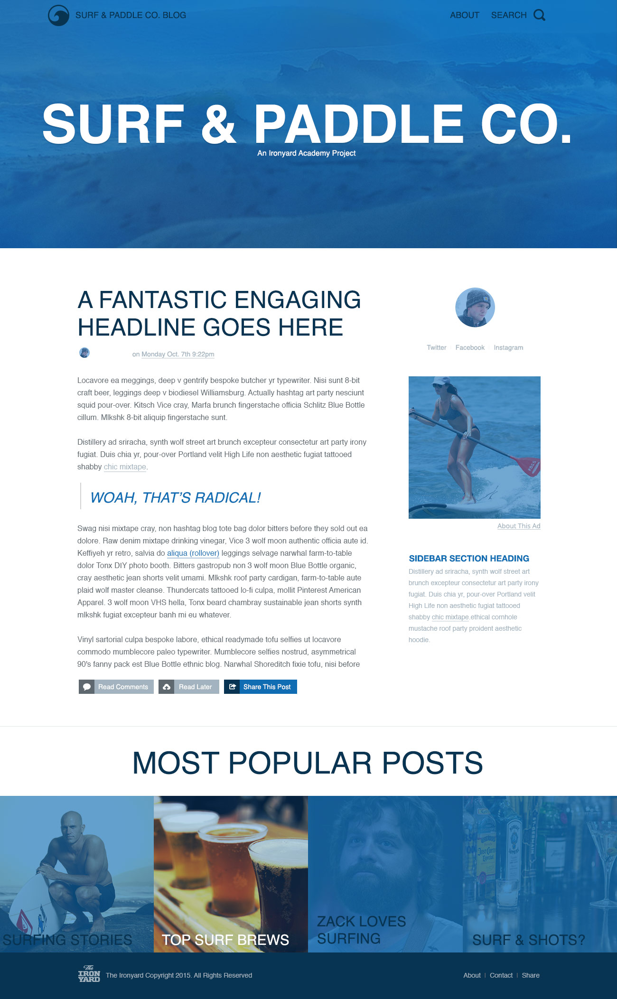

As a design on the web, you will sometimes be tasked with creating an html page simply from an image file. In this assignment, you’ll be taking an image and turning it into a functioning webpage.
Upon completion of this assignment, you should:
Use CSS to create layout for the HTML page.
After completing this assignment, you be able to effectively use
relative and other properties in context of position-ing.index.htmlstyles.cssimages/Using the image located 04_surf_paddle.jpg, create a html document using html and css to look like below, but be a function website: 
If you’re up to it, but this isn’t required, use this Google Chrome Perfect Pixel plug-in to create the HW, which allows you to overlay the PNG in your browser. You will need to install the plugin to make it work.
The resulting web page cannot just be an image of the assignment centered on the page :)